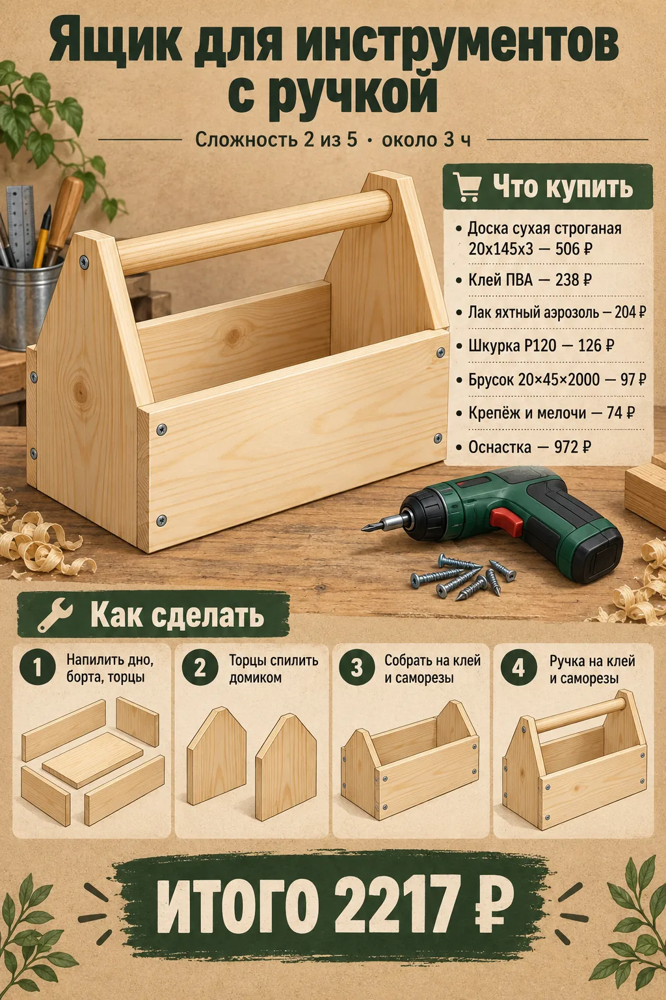
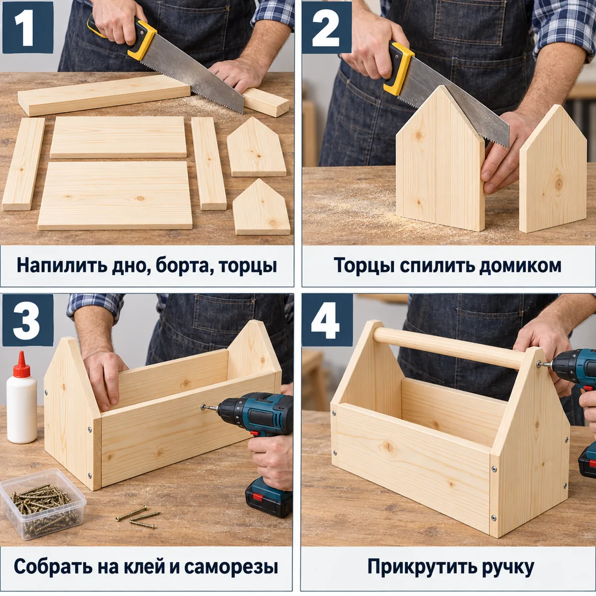

★ топ-10 · дерево
Ящик для инструментов с ручкой
Открытый столярный ящик-переноска: торцы с треугольным верхом, ручка-перекладина из бруска.
1915 ₽смета с оснасткой
- Напилить дно, борта, торцы
- Торцы спилить домиком
- Собрать на клей и саморезы
- Прикрутить ручку
Плакат и инструкция


Как сделать подробно
- Нарезать доску 20×145: дно 500, 2 борта 500, 2 торца 250 мм (верх торцов — «домиком» в стусле).
- Собрать короб на клей и саморезы 32 мм.
- Между торцами прикрутить ручку из бруска 20×45 длиной 540 мм.
- Скруглить ручку шкуркой.
- Покрыть лаком.
Что купить в «Петровиче»
| Позиция | Зачем | Кол-во | Цена | Сумма |
|---|---|---|---|---|
| материал | ||||
| Доска 20×145×2000 Доска сухая строганая 20х145х2000 мм хвойные породы сорт АВ ФГИС ЛК · арт. 102355 |
доска 20×145×2000 | 2 шт | 341 ₽ | 682 ₽ |
| Брусок 20×45×2000 Брусок сухой строганый 20х45х2000 мм сорт АВ хвойные породы ФГИС ЛК · арт. 626000 |
брусок 20×45 — ручка | 1 шт | 97 ₽ | 97 ₽ |
| крепёж | ||||
| Саморезы 32 мм Саморезы ГД 32x3,5 мм (30 шт.) · арт. 125768 |
саморезы 32 мм | 1 упак | 37 ₽ | 37 ₽ |
| отделка | ||||
| Лак яхтный аэрозоль Лак алкидный яхтный аэрозольный Престиж бесцветный 425 мл глянцевый · арт. 1098186 |
лак аэрозоль | 1 шт | 204 ₽ | 204 ₽ |
| расходник | ||||
| Карандаш Карандаш строительный малярный Hesler (2 шт.) · арт. 125418 |
карандаш | 1 упак | 30 ₽ | 30 ₽ |
| Шкурка P120 Наждачная бумага Flexione 230х280 мм Р120 влагостойкая · арт. 691898 |
шкурка P120 | 2 шт | 42 ₽ | 84 ₽ |
| Клей ПВА Клей ПВА Момент Столяр Экспресс D2 125 г · арт. 675688 |
клей ПВА | 1 шт | 238 ₽ | 238 ₽ |
| оснастка | ||||
| Бита PH2 Бита Hesler PH2 магнитная 25 мм (882083) · арт. 882083 |
бита PH2 под саморезы | 1 шт | 33 ₽ | 33 ₽ |
| Сверло 3 мм Сверло по дереву спиральное КМ 3х60 мм (966064) · арт. 966064 |
сверло 3 мм: засверловка, чтобы доска не треснула | 1 шт | 42 ₽ | 42 ₽ |
| Ножовка по дереву Ножовка по дереву 400 мм 9 зуб/дюйм средний зуб · арт. 681543 |
ножовка по дереву | 1 шт | 226 ₽ | 226 ₽ |
| Стусло Стусло Сибртех пластиковое 300х65 мм (22571) · арт. 968520 |
стусло: ровный рез 90° и 45° | 1 шт | 143 ₽ | 143 ₽ |
| Рулетка Рулетка с фиксатором 3 м x 16 мм · арт. 159373 |
рулетка | 1 шт | 99 ₽ | 99 ₽ |
| Итого, включая оснастку 543 ₽ | 1915 ₽ | |||
Источник идеи: https://www.drive2.ru/c/564027750768182243/. Проект переработан под шуруповёрт 12 В и ручной инструмент.
Инженерная проработка есть ошибки
Параметрическая 3D-модель с настоящими отверстиями, крепёж расставлен по правилам (Eurocode 5, упрощённо для DIY), раскрой с учётом пропила, закупка упаковками. Габарит модели 540×145×290 мм, масса ≈2.88 кг. Прочность не рассчитывалась.


Проверка проекта
- Ошибка: side1_end1: 3.5×32 через side#1 20 мм входит в end#1 на 12 мм < 14 мм (4d) — не держитКак исправить: саморез 3.5×41
- Ошибка: side1_end2: 3.5×32 через side#1 20 мм входит в end#2 на 12 мм < 14 мм (4d) — не держитКак исправить: саморез 3.5×41
- Ошибка: side2_end1: 3.5×32 через side#2 20 мм входит в end#1 на 12 мм < 14 мм (4d) — не держитКак исправить: саморез 3.5×41
- Ошибка: side2_end2: 3.5×32 через side#2 20 мм входит в end#2 на 12 мм < 14 мм (4d) — не держитКак исправить: саморез 3.5×41
- Ошибка: bottom_side1: 3.5×32 через bottom 20 мм входит в side#1 на 12 мм < 14 мм (4d) — не держитКак исправить: саморез 3.5×41
- Ошибка: bottom_end1: 3.5×32 через bottom 20 мм входит в торец в end#1 на 12 мм < 14 мм (4d) — не держитКак исправить: саморез 3.5×51
- Ошибка: Габарит в описании (шапка текста) 500×200×250 мм, а у модели 145×290×540 мм
- Внимание: до кромки 10.0 мм < 10.5 мм (3d) — обязательно засверливать пилотом — 8 места: side1_end1, side1_end2, side2_end1, side2_end2, bottom_side1, bottom_end1, handle_end1, handle_end2
- Внимание: шов 45 мм — помещается только 1 саморез (соединение будет вращаться) — 2 места: handle_end1, handle_end2Как исправить: добавьте клей или уголок
- Внимание: Неоднозначность в исходном описании: Шапка текста заявляет габарит 500×200×250. Глубина короба по модели 145 мм (ширина доски 20×145), а не 200 — конфликт оставлен в claims. Высота торцов (домиком) 250 мм совпадает с моделью, но общая высота изделия с ручкой поверху больше (дно 20 + торец 250 + ручка 45 = 315 мм).
- Внимание: Неоднозначность в исходном описании: Торцы «домиком» смоделированы как пятиугольник (прямоугольная нижняя часть + треугольный скат) с шириной 105 мм (роспуск из доски 145 мм) — ширина ската текстом не задана числом, скат принят симметричным с пиком по центру.
- Внимание: Неоднозначность в исходном описании: Ручка длиной 540 мм длиннее короба (500 мм) на 40 мм — выступает по 20 мм за каждый торец; текст это не поясняет явно, принято как выступающие концы ручки.
- Внимание: Неоднозначность в исходном описании: Засверловка/направление саморезов между ручкой и пиком торца — упрощено: ручка крепится к верхней (пиковой) кромке торца.
Крепёж по соединениям
| Соединение | Крепёж | Шт. | Заход | Пилот |
|---|---|---|---|---|
| side1_end1 | 3.5×32 | 2 | 12 мм | ⌀2.5 |
| side1_end2 | 3.5×32 | 2 | 12 мм | ⌀2.5 |
| side2_end1 | 3.5×32 | 2 | 12 мм | ⌀2.5 |
| side2_end2 | 3.5×32 | 2 | 12 мм | ⌀2.5 |
| bottom_side1 | 3.5×32 | 4 | 12 мм | ⌀2.5 |
| bottom_end1 | 3.5×32 | 2 | 12 мм | ⌀2.5 |
| handle_end1 | 3.5×51 | 1 | 31 мм | ⌀2.5 |
| handle_end2 | 3.5×51 | 1 | 31 мм | ⌀2.5 |
Фактический расход
Доска сухая строганая 20х145х2000: 2007.5 мм
Брусок сухой строганый 20х45х2000 (ручка): 541.5 мм
Саморез 3.5×32: 14 шт
Саморез 3.5×51: 2 шт
Шкурка P120: ≈2.05 лист
Лак-аэрозоль: ≈0.18 л
Клей ПВА: ≈0 кг